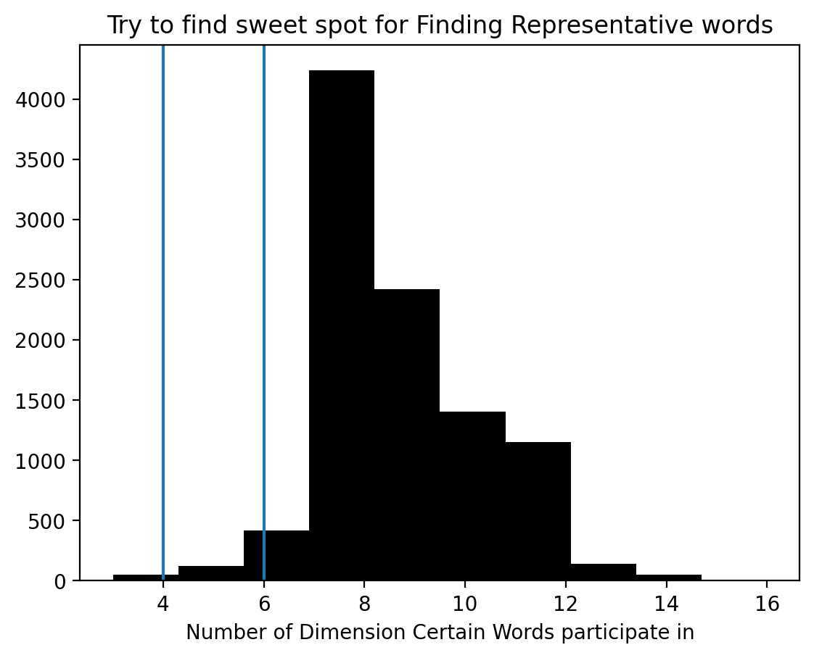
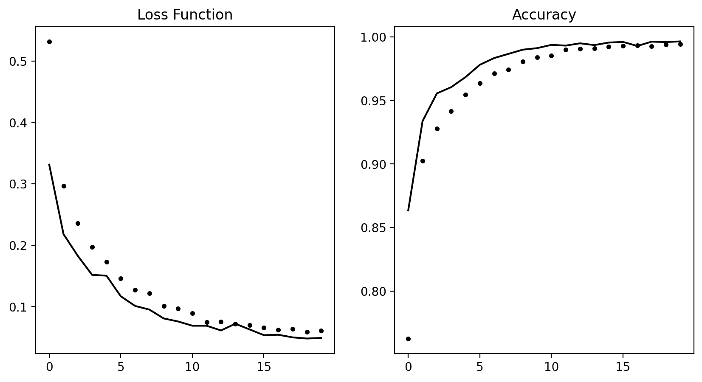

import keras
def plot_history(self):
loss=self.history['loss']
acc=self.history['accuracy']
val_loss=self.history['val_loss']
val_acc=self.history['val_accuracy']
epochs=range(len(loss))
_, (ax1,ax2)=plt.subplots(1,2,figsize=(10,5))
ax1.plot(epochs, loss,'k.',label='Training Loss')
ax1.plot(epochs, val_loss,'k-', label='Validation Loss')
ax1.set_title('Loss Function')
ax2.plot(epochs,acc, 'k.')
ax2.plot(epochs,val_acc,'k-')
ax2.set_title('Accuracy')
keras.src.callbacks.History.plot=plot_historyFirst ML Model
Python
Machine-Learning
Deep-Learning
Commmon Functions
Top Note
Loss Function, Optimizerm, Arch
IBM Data Schema (Or Possible for any NLP data set-up)
First thing to know the the word will load top 10,000 (you choice) frequency of worlds and index them by they Global Frequencys;
Second thing to notice is index 0,1,2 (in fact freqency) are reserved for “paddings”,“start of sequenhce”, “unknown”
from keras.datasets import imdb
MAXWORD_FREQ=10000
(train_data,train_labels), (test_data,test_labels) = imdb.load_data(num_words=MAXWORD_FREQ)
word_index = imdb.get_word_index()Recreate sentences from word numeric index
The word_index is keyvalue pair, ‘world’:‘frequency’. You recreate it by map it back to the sequence of int representing words. With off set word_index 1, to 3, because they are reserved for paddings.
word_index = imdb.get_word_index() #1
reverse_word_index = dict(
[(value, key) for (key, value) in word_index.items()]) #2
decoded_review = ' '.join(
[reverse_word_index.get(i - 3, '?') for i in train_data[0]]) #3
#1 - word_index is a dictionary mapping words to an integer index.
#2 - Reverses it, mapping integer indices to words
#3 - Decodes the review.
## Note that the indices are offset by 3 because 0, 1, and 2
## are reserved indices for “padding,” “start of sequence,” and “unknown.”
def decode_review(vec):
if(len(vec)==1):
return reverse_word_index.get(i - 3, '?')
decoded_review = ' '.join(
[reverse_word_index.get(i - 3, '?') for i in vec])
return decoded_review
## tip of the day: textwrap
import textwrap
print(textwrap.fill(decoded_review, 75))
print(train_labels[0])
print('\nNotice that some below index are reserved for ...')
print([reverse_word_index.get(i) for i in range(3)])? this film was just brilliant casting location scenery story direction
everyone's really suited the part they played and you could just imagine
being there robert ? is an amazing actor and now the same being director ?
father came from the same scottish island as myself so i loved the fact
there was a real connection with this film the witty remarks throughout the
film were great it was just brilliant so much that i bought the film as
soon as it was released for ? and would recommend it to everyone to watch
and the fly fishing was amazing really cried at the end it was so sad and
you know what they say if you cry at a film it must have been good and this
definitely was also ? to the two little boy's that played the ? of norman
and paul they were just brilliant children are often left out of the ? list
i think because the stars that play them all grown up are such a big
profile for the whole film but these children are amazing and should be
praised for what they have done don't you think the whole story was so
lovely because it was true and was someone's life after all that was shared
with us all
1
Notice that some below index are reserved for ...
[None, 'the', 'and'][reverse_word_index.get(i) for i in [0,1,2,3]]
print(f'%s of disequal list of array;'%train_data.shape[0])
print('To input as a tensor you expect a matrix to be equal')25000 of disequal list of array;
To input as a tensor you expect a matrix to be equalProcess emnumerated word index into a Tensor.
import numpy as np
assert max([max(vec) for vec in train_data ]) == MAXWORD_FREQ -1
def vectorize_sequences(sequences, dimension=MAXWORD_FREQ):
results = np.zeros((len(sequences), dimension)) #1
for i, sequence in enumerate(sequences):
results[i, sequence] = 1. #2
return results
x_train = vectorize_sequences(train_data) #3
x_test = vectorize_sequences(test_data) #4
#1 - Creates an all-zero matrix of shape (len(sequences), dimension)
#2 - Sets specific indices of results[i] to 1s
#3 - Vectorized training data
#4 - Vectorized test data
## As I unerstand it this particular matrix simply capture accurances.
## The number simple present if the word exists or not.
# The above step convert it to float
# Convertion Of Y Labeles
y_train = np.asarray(train_labels).astype('float32')
y_test = np.asarray(test_labels).astype('float32')## Explain NP array's modification with below code:
# empty_container=np.zeros((len(train_data), 10000))
m=np.repeat(0,16).reshape((4,4))#this is also superseeded with np.zeros( (imax,jmax) )
m[0,[1,2,2,3]]=1
print(m)
print('Although 2 appear twice, it is only modified once')
print('Even if I do this instead `+=`')
m=np.zeros((4,4))
m[0,[1,2,2,3]]+=1
print(m)
print('(side effect np.zeros creates float by default)')[[0 1 1 1]
[0 0 0 0]
[0 0 0 0]
[0 0 0 0]]
Although 2 appear twice, it is only modified once
Even if I do this instead `+=`
[[0. 1. 1. 1.]
[0. 0. 0. 0.]
[0. 0. 0. 0.]
[0. 0. 0. 0.]]
(side effect np.zeros creates float by default)Build a Network
The Hidden Unit Use ‘Dense Layer’ with ‘Relu activation’ is actual a linear model. Somewhat polynomial nature. 16 is the second dimension of matrix (Meaning shrink the original 10,000 into 16 dimensions). Extracting exactly 16 representation of the data.
The Key achitecture Decisions - How many layers to use; - How many hidden uits to choose for each layer
Particular In This Case
Stack two dense layers of relu activation won’t extend the hypothesis space. Because deep stack of linear layers would still implement a linear operation (demonstrated in Visualise Matrix Dot Transformation).
from keras import models
from keras import layers
model = models.Sequential()
model.add(layers.Dense(16, activation='relu', input_shape=(10000,)))
model.add(layers.Dense(16, activation='relu'))
model.add(layers.Dense(1, activation='sigmoid'))
model.compile(optimizer='rmsprop',
loss='binary_crossentropy',
metrics=['accuracy'])
## Alternative Loss and Optimizer---------------------------------------
# from keras import optimizers
# model.compile(optimizer=optimizers.RMSprop(lr=0.001),
# loss='binary_crossentropy',
# metrics=['accuracy'])
# from keras import losses
# from keras import metrics
# model.compile(optimizer=optimizers.RMSprop(lr=0.001),
# loss=losses.binary_crossentropy,
# metrics=[metrics.binary_accuracy])## Further Slice Traning Data to 10,000 set aside.
x_val = x_train[:10000]
partial_x_train = x_train[10000:]
y_val = y_train[:10000]
partial_y_train = y_train[10000:]
model.compile(optimizer='rmsprop',
loss='binary_crossentropy',
metrics=['acc'])
history = model.fit(partial_x_train,
partial_y_train,
epochs=20,
batch_size=512,
validation_data=(x_val, y_val))Epoch 1/20
30/30 [==============================] - 1s 30ms/step - loss: 0.5062 - acc: 0.7952 - val_loss: 0.3902 - val_acc: 0.8693
Epoch 2/20
30/30 [==============================] - 0s 8ms/step - loss: 0.3090 - acc: 0.9045 - val_loss: 0.3078 - val_acc: 0.8880
Epoch 3/20
30/30 [==============================] - 0s 5ms/step - loss: 0.2295 - acc: 0.9279 - val_loss: 0.2812 - val_acc: 0.8909
Epoch 4/20
30/30 [==============================] - 0s 5ms/step - loss: 0.1800 - acc: 0.9439 - val_loss: 0.2752 - val_acc: 0.8909
Epoch 5/20
30/30 [==============================] - 0s 5ms/step - loss: 0.1467 - acc: 0.9536 - val_loss: 0.2772 - val_acc: 0.8901
Epoch 6/20
30/30 [==============================] - 0s 5ms/step - loss: 0.1216 - acc: 0.9637 - val_loss: 0.2887 - val_acc: 0.8875
Epoch 7/20
30/30 [==============================] - 0s 5ms/step - loss: 0.1019 - acc: 0.9707 - val_loss: 0.3043 - val_acc: 0.8860
Epoch 8/20
30/30 [==============================] - 0s 5ms/step - loss: 0.0846 - acc: 0.9760 - val_loss: 0.3276 - val_acc: 0.8788
Epoch 9/20
30/30 [==============================] - 0s 5ms/step - loss: 0.0715 - acc: 0.9817 - val_loss: 0.3525 - val_acc: 0.8749
Epoch 10/20
30/30 [==============================] - 0s 6ms/step - loss: 0.0623 - acc: 0.9835 - val_loss: 0.3734 - val_acc: 0.8800
Epoch 11/20
30/30 [==============================] - 0s 7ms/step - loss: 0.0468 - acc: 0.9893 - val_loss: 0.4042 - val_acc: 0.8720
Epoch 12/20
30/30 [==============================] - 0s 6ms/step - loss: 0.0417 - acc: 0.9900 - val_loss: 0.4202 - val_acc: 0.8748
Epoch 13/20
30/30 [==============================] - 0s 7ms/step - loss: 0.0330 - acc: 0.9935 - val_loss: 0.4500 - val_acc: 0.8747
Epoch 14/20
30/30 [==============================] - 0s 5ms/step - loss: 0.0270 - acc: 0.9953 - val_loss: 0.4845 - val_acc: 0.8725
Epoch 15/20
30/30 [==============================] - 0s 6ms/step - loss: 0.0227 - acc: 0.9961 - val_loss: 0.5213 - val_acc: 0.8679
Epoch 16/20
30/30 [==============================] - 0s 6ms/step - loss: 0.0176 - acc: 0.9973 - val_loss: 0.5849 - val_acc: 0.8624
Epoch 17/20
30/30 [==============================] - 0s 5ms/step - loss: 0.0138 - acc: 0.9983 - val_loss: 0.5837 - val_acc: 0.8688
Epoch 18/20
30/30 [==============================] - 0s 5ms/step - loss: 0.0098 - acc: 0.9994 - val_loss: 0.6790 - val_acc: 0.8555
Epoch 19/20
30/30 [==============================] - 0s 5ms/step - loss: 0.0107 - acc: 0.9982 - val_loss: 0.6480 - val_acc: 0.8666
Epoch 20/20
30/30 [==============================] - 0s 6ms/step - loss: 0.0055 - acc: 0.9998 - val_loss: 0.6837 - val_acc: 0.8656# history_dict = history.history
# history_dict.keys()
# # [u'acc', u'loss', u'val_acc', u'val_loss']
import matplotlib.pyplot as plt
%config InlineBackend.figure_format='retina'
history_dict = history.history
loss_values = history_dict['loss']
val_loss_values = history_dict['val_loss']
acc = history_dict['acc']
val_acc_values = history_dict['val_acc']
epochs = range(1, len(acc) + 1)
figure, (ax1,ax2)=plt.subplots(1,2,figsize=(10,5))
ax1.plot(epochs, loss_values, 'ko', label='Training loss') #1
ax1.plot(epochs, val_loss_values, 'k', label='Validation loss') #2
ax1.vlines(4,0,0.29,colors='b',alpha=0.5,linestyles='--')
ax1.set_title('Training and validation loss')
ax1.set_xlabel('Epochs')
ax1.set_ylabel('Loss')
ax1.legend()
ax2.plot(epochs, acc, 'ko', label='Training acc')
ax2.plot(epochs, val_acc_values, 'k', label='Validation acc')
ax2.set_title('Training and validation accuracy')
ax2.set_xlabel('Epochs')
ax2.set_ylabel('Accuracy')
ax2.legend()
# plt.clf() #1
# plt.show()
# #1 - Clears the figure
figure.suptitle('Example of Training Over Fitting')
txt='This model tell you to stop at 4th epoch to avoid overfitting'
figure.text(0.5,0.0001,txt,wrap=True,horizontalalignment='center')Text(0.5, 0.0001, 'This model tell you to stop at 4th epoch to avoid overfitting')
model.evaluate(x_test,y_test)782/782 [==============================] - 0s 462us/step - loss: 0.7591 - acc: 0.8497[0.759108304977417, 0.8497200012207031]This code is interesting. Resuffle the array and test collision.
import copy
test_labels_copy = copy.copy(test_labels)
np.random.shuffle(test_labels_copy)
hits_array = np.array(test_labels) == np.array(test_labels_copy)
float(np.sum(hits_array)) / len(test_labels)0.49952Retrain Network with only 4 Epoch
model = models.Sequential()
model.add(layers.Dense(16, activation='relu', input_shape=(10000,)))
model.add(layers.Dense(16, activation='relu'))
model.add(layers.Dense(1, activation='sigmoid'))
model.compile(optimizer='rmsprop',
loss='binary_crossentropy',
metrics=['accuracy'])
model.fit(x_train, y_train, epochs=4, batch_size=512,
validation_data=(x_val, y_val)
)
results = model.evaluate(x_test, y_test)
print(results)Epoch 1/4
49/49 [==============================] - 1s 17ms/step - loss: 0.4665 - accuracy: 0.8178 - val_loss: 0.3009 - val_accuracy: 0.9085
Epoch 2/4
49/49 [==============================] - 0s 6ms/step - loss: 0.2664 - accuracy: 0.9077 - val_loss: 0.1999 - val_accuracy: 0.9405
Epoch 3/4
49/49 [==============================] - 0s 5ms/step - loss: 0.2065 - accuracy: 0.9265 - val_loss: 0.1598 - val_accuracy: 0.9519
Epoch 4/4
49/49 [==============================] - 0s 5ms/step - loss: 0.1713 - accuracy: 0.9404 - val_loss: 0.1427 - val_accuracy: 0.9528
782/782 [==============================] - 0s 463us/step - loss: 0.3000 - accuracy: 0.8806
[0.3000180721282959, 0.8805999755859375]test_labels_copy = copy.copy(test_labels)
np.random.shuffle(test_labels_copy)
hits_array = np.array(test_labels) == np.array(test_labels_copy)
float(np.sum(hits_array)) / len(test_labels)0.50368Below I am Trying to Make Sense of What Happened:
import matplotlib.ticker as mticker
n=0
rel_word_i={}
MIN_FREQ=500
MAX_FREQ=2000
random_sample=np.random.randint(0,len(x_train),5)
def update_y_tick(x,pos):
if x in rel_word_i.keys():
return rel_word_i[x]
else:
return ""
for i, vec in enumerate(x_train[random_sample]):# select first 4 corpus
word_i = [i for i,value in enumerate(vec) if value==1.0 and i <= MAX_FREQ and i >= MIN_FREQ]
if(y_train[i]==1.0):
col='g'
else:
col='r'
plt.hlines(word_i, xmin=n,xmax=n+1,colors=col,alpha=0.2)
for wi in word_i:
rel_word_i[wi]=reverse_word_index[wi-3]
plt.text(y=wi,x=n,s=reverse_word_index[wi-3])
n+=1
plt.gca().yaxis.set_major_formatter(mticker.FuncFormatter(update_y_tick))
plt.title('What you put in into Tensor')
# plt.vlines(np.arange(len(x_train[0])),x_train[0])
# plt.vlines(np.arange(len(x_train[1])),x_train[1])Text(0.5, 1.0, 'What you put in into Tensor')
from colorama import Fore
from textwrap import fill,shorten
for i,w in enumerate(train_data[random_sample]):
senti = train_labels[random_sample][i]
if senti == 1.0:
Obj=Fore.GREEN
else:
Obj=Fore.RED
print(Obj + fill(shorten(decode_review(w),200),80))
print('\n')? i can't say how closely the film follows the novel never having read the book
but since this ? in at some six and a half hours it's a good bet that most of
the base are covered or at least we [...]
? i do not believe all the praise for this movie the play and movie were a
ripoff of sleuth michael caine wishes he were olivier and reeves wishes he were
caine caine even had the nerve to do a [...]
? this is a tepid ? drama that covers no new ground ? all the cliches and is
sloppy with facts for example ? is a very flat city so why is it ? in the movie
for example the end of the great war [...]
? i read some previous comments stating that this movie loses steam towards the
end of the movie and also that it has a similar ending to cape fear i completely
disagree i'm going to give a [...]
? yokai ? is a children's film by takashi miike but as you might expect it's
probably a bit too dark scary for younger ones however older children may well
eat this up that is if you play it [...]
I had attempt to visualise the weight matrix and see roughly see what it has been doing underlaying…it is not straight forward at all…
But it seems this by itself could be a project on its own.
# from functools import reduce
[print('Weight',i+1,w.shape) for i,w in enumerate(model.weights)]
# dimension reduction layer
drW=model.weights[0]Weight 1 (10000, 16)
Weight 2 (16,)
Weight 3 (16, 16)
Weight 4 (16,)
Weight 5 (16, 1)
Weight 6 (1,)The first weight is probably reduce dimension of 100000 words into 16 distinct dimensions; Its probably best to compare which index of each dimension is unique
## The Following Code Try to
# assert np.all(np.where(drW < 0, 0, 1)[0:1,]==np.where(drW < 0, 0, 1)[0,:])
# # its not easy because you have to remember the
# ## off set 3 rule
# ## and top frequency words are amost meanless
# rs={}
# for dim,line in enumerate(np.where(drW < 0, 0, 1)[0:2000,].T):
# keywords = [reverse_word_index.get(i-3, '?') for i,e in enumerate(line) if e == 1][1000:]
# rs[f'dimension %s'%(dim+1)]=keywords
# for d,w in rs.items():
# print(d)
# print(', '.join(w[0:3]),'...')
dimention_reduction_weight = model.weights[0]
DrW=np.where(dimention_reduction_weight <=0, 0, 1)
plt.hist(DrW.sum(axis=1),color='k')
plt.title("Try to find sweet spot for Finding Representative words")
plt.xlabel("Number of Dimension Certain Words participate in")
FLOOR_COM=4
CEILING_COM=6
plt.axvline(FLOOR_COM,0,4000)
plt.axvline(CEILING_COM,0,4000)
## Try Decode Feature Appears
distinctive=(DrW.sum(axis=1) <= CEILING_COM) & (DrW.sum(axis=1) >= FLOOR_COM)
distinctive_index = np.arange(10000)[distinctive]
distinctive_word = [reverse_word_index.get(i-3,'?') for i in distinctive_index]#these words are distinctive
distinctive_weight=DrW[distinctive,:]
representitive_word={}
for d,lines in enumerate(distinctive_weight.T):
words=[]
for w,value in enumerate(lines):
if value==1:
words.append(distinctive_word[w])
else:
pass
representitive_word[d]=words
for i,w in representitive_word.items():
offset=3
print(i,":", ' ... '.join(w[0+offset:80+offset:20]))
print("Analysis this way is bit waste of time again you are in reading tea leaf")0 : ask ... boat ... karloff ... pig
1 : running ... understanding ... letting ... lately
2 : cannot ... plane ... wears ... idiots
3 : personal ... uk ... knock ... pig
4 : hair ... v ... suspects ... winds
5 : problems ... fate ... fired ... persons
6 : indeed ... wind ... quote ... decisions
7 : ask ... alice ... pants ... offs
8 : female ... v ... appearances ... outfit
9 : male ... fool ... walken ... operation
10 : female ... committed ... shirt ... mars
11 : male ... fate ... racism ... ginger
12 : indeed ... environment ... satan ... pressure
13 : female ... wind ... cook ... explaining
14 : female ... idiots ... justin ... 1991
15 : male ... multiple ... we'll ... operation
Analysis this way is bit waste of time again you are in reading tea leaf
Suggestion For Further Experiment
- Use three layers
- Use more units
- Try use
mseloss function - Try use
tanhactivation.
model = models.Sequential()
model.add(layers.Dense(16, activation='relu', input_shape=(10000,)))
model.add(layers.Dense(16, activation='relu'))
model.add(layers.Dense(1, activation='tanh'))
model.compile(optimizer='rmsprop',
loss='binary_crossentropy',
metrics=['accuracy'])
history = model.fit(x_train, y_train, epochs=20, batch_size=512,
validation_data=(x_val, y_val)
)Epoch 1/20
49/49 [==============================] - 1s 17ms/step - loss: 0.5320 - accuracy: 0.7627 - val_loss: 0.3314 - val_accuracy: 0.8636
Epoch 2/20
49/49 [==============================] - 0s 6ms/step - loss: 0.2966 - accuracy: 0.9025 - val_loss: 0.2181 - val_accuracy: 0.9338
Epoch 3/20
49/49 [==============================] - 0s 5ms/step - loss: 0.2361 - accuracy: 0.9278 - val_loss: 0.1827 - val_accuracy: 0.9556
Epoch 4/20
49/49 [==============================] - 0s 5ms/step - loss: 0.1971 - accuracy: 0.9416 - val_loss: 0.1518 - val_accuracy: 0.9605
Epoch 5/20
49/49 [==============================] - 0s 5ms/step - loss: 0.1731 - accuracy: 0.9547 - val_loss: 0.1504 - val_accuracy: 0.9684
Epoch 6/20
49/49 [==============================] - 0s 5ms/step - loss: 0.1460 - accuracy: 0.9636 - val_loss: 0.1169 - val_accuracy: 0.9781
Epoch 7/20
49/49 [==============================] - 0s 5ms/step - loss: 0.1272 - accuracy: 0.9714 - val_loss: 0.1012 - val_accuracy: 0.9834
Epoch 8/20
49/49 [==============================] - 0s 5ms/step - loss: 0.1215 - accuracy: 0.9743 - val_loss: 0.0952 - val_accuracy: 0.9867
Epoch 9/20
49/49 [==============================] - 0s 5ms/step - loss: 0.1007 - accuracy: 0.9806 - val_loss: 0.0808 - val_accuracy: 0.9900
Epoch 10/20
49/49 [==============================] - 0s 4ms/step - loss: 0.0970 - accuracy: 0.9839 - val_loss: 0.0759 - val_accuracy: 0.9912
Epoch 11/20
49/49 [==============================] - 0s 5ms/step - loss: 0.0890 - accuracy: 0.9854 - val_loss: 0.0689 - val_accuracy: 0.9938
Epoch 12/20
49/49 [==============================] - 0s 5ms/step - loss: 0.0745 - accuracy: 0.9899 - val_loss: 0.0689 - val_accuracy: 0.9932
Epoch 13/20
49/49 [==============================] - 0s 5ms/step - loss: 0.0757 - accuracy: 0.9907 - val_loss: 0.0612 - val_accuracy: 0.9950
Epoch 14/20
49/49 [==============================] - 0s 5ms/step - loss: 0.0721 - accuracy: 0.9911 - val_loss: 0.0722 - val_accuracy: 0.9936
Epoch 15/20
49/49 [==============================] - 0s 5ms/step - loss: 0.0700 - accuracy: 0.9923 - val_loss: 0.0629 - val_accuracy: 0.9956
Epoch 16/20
49/49 [==============================] - 0s 5ms/step - loss: 0.0659 - accuracy: 0.9930 - val_loss: 0.0536 - val_accuracy: 0.9961
Epoch 17/20
49/49 [==============================] - 0s 5ms/step - loss: 0.0622 - accuracy: 0.9932 - val_loss: 0.0542 - val_accuracy: 0.9929
Epoch 18/20
49/49 [==============================] - 0s 5ms/step - loss: 0.0637 - accuracy: 0.9926 - val_loss: 0.0500 - val_accuracy: 0.9963
Epoch 19/20
49/49 [==============================] - 0s 5ms/step - loss: 0.0588 - accuracy: 0.9942 - val_loss: 0.0481 - val_accuracy: 0.9960
Epoch 20/20
49/49 [==============================] - 0s 4ms/step - loss: 0.0612 - accuracy: 0.9942 - val_loss: 0.0491 - val_accuracy: 0.9965history.plot()
results = model.evaluate(x_test, y_test)
print(results)782/782 [==============================] - 0s 455us/step - loss: 1.3543 - accuracy: 0.8439
[1.3543484210968018, 0.8439199924468994]
Reuters Classification
here are 46 different topics; some topics are more represented than others, but each topic has at least 10 examples in the training set.
# class utilities
# you thought they'd have a plot method by now
import keras
def plot_history(self):
loss=self.history['loss']
acc=self.history['accuracy']
val_loss=self.history['val_loss']
val_acc=self.history['val_accuracy']
epochs=range(len(loss))
_, (ax1,ax2)=plt.subplots(1,2,figsize=(10,5))
ax1.plot(epochs, loss,'k.')
ax1.plot(epochs, val_loss,'k-')
ax1.set_title('Loss Function')
ax2.plot(epochs,acc, 'k.')
ax2.plot(epochs,val_acc,'k-')
ax2.set_title('Accuracy')
keras.src.callbacks.History.plot=plot_history
def to_one_hot(labels, dimension=46):
results = np.zeros((len(labels), dimension))
for i, label in enumerate(labels):
results[i, label] = 1.
return results
def vectorize_sequences(sequences, dimension=10000):
results = np.zeros((len(sequences), dimension))
for i, sequence in enumerate(sequences):
results[i, sequence] = 1.
return resultsfrom keras.datasets import reuters
(train_data, train_labels), (test_data, test_labels) = reuters.load_data(
num_words=10000)word_index = reuters.get_word_index()
reverse_word_index = dict([(value, key) for (key, value) in word_index.items()])
decoded_newswire = ' '.join([reverse_word_index.get(i - 3, '?') for i in
train_data[0]]) #1
decoded_newswire
#1 - Note that the indices are offset by 3 because 0, 1, and 2 are reserved indices for “padding,” “start of sequence,” and “unknown.”
'? ? ? said as a result of its december acquisition of space co it expects earnings per share in 1987 of 1 15 to 1 30 dlrs per share up from 70 cts in 1986 the company said pretax net should rise to nine to 10 mln dlrs from six mln dlrs in 1986 and rental operation revenues to 19 to 22 mln dlrs from 12 5 mln dlrs it said cash flow per share this year should be 2 50 to three dlrs reuter 3'import numpy as np
x_train = vectorize_sequences(train_data) #1
x_test = vectorize_sequences(test_data) #2
#1 - Vectorized training data
#2 - Vectorized test data
one_hot_train_labels = to_one_hot(train_labels) #1
one_hot_test_labels = to_one_hot(test_labels) #2
#1 - Vectorized training labels
#2 - Vectorized test labels
for para in train_data[:3]:
words=[reverse_word_index.get(i-3,'?') for i in range(len(para))]
sentence=' '.join(words)
print(textwrap.fill(sentence,70))? ? ? ? the of to in said and a mln 3 for vs dlrs it reuter 000 1 pct
on from is that its cts by at year be with 2 will was billion he u s
net has would an as 5 not loss 4 1986 company which but this shr last
are lt have or 6 bank 7 were 8 had oil trade share one about 0 inc 9
new profit also market they two shares stock corp tonnes 10 up been
revs
? ? ? ? the of to in said and a mln 3 for vs dlrs it reuter 000 1 pct
on from is that its cts by at year be with 2 will was billion he u s
net has would an as 5 not loss 4 1986 company which but this shr last
are
? ? ? ? the of to in said and a mln 3 for vs dlrs it reuter 000 1 pct
on from is that its cts by at year be with 2 will was billion he u s
net has would an as 5 not loss 4 1986 company which but this shr last
are lt have or 6 bank 7 were 8 had oil trade share one about 0 inc 9
new profit also market they two shares stock corp tonnes 10 up been
revs prices sales 1987 per may after april march more price than
quarter first other rate 15 group february 1985 government if exchange
three january co against dollar could we offer over told 20 agreement
week production note 30 their some foreign interest no japan tax 50
expected 12 total under all rosefrom keras import models
from keras import layers
model = models.Sequential()
model.add(layers.Dense(64, activation='relu', input_shape=(10000,)))
model.add(layers.Dense(64, activation='relu'))
model.add(layers.Dense(46, activation='softmax'))
model.compile(optimizer='rmsprop',
loss='categorical_crossentropy',
metrics=['accuracy'])
x_val = x_train[:1000]
partial_x_train = x_train[1000:]
y_val = one_hot_train_labels[:1000]
partial_y_train = one_hot_train_labels[1000:]
# this coponent can be rerun often
history = model.fit(partial_x_train,
partial_y_train,
epochs=20,
batch_size=512,
validation_data=(x_val, y_val))history.plot()
plt.gcf().suptitle('A rmsporp optimiser on categorical_crossentropy')Text(0.5, 0.98, 'A rmsporp optimiser on categorical_crossentropy')
The Boston Housing Price
from keras.datasets import boston_housing
(train_data, train_targets), (test_data, test_targets) = boston_housing.load_data()Downloading data from https://storage.googleapis.com/tensorflow/tf-keras-datasets/boston_housing.npz
57026/57026 [==============================] - 0s 1us/stepmean = train_data.mean(axis=0)
train_data -= mean
std = train_data.std(axis=0)
train_data /= std
test_data -= mean
test_data /= stdfrom keras import models
from keras import layers
def build_model():
model = models.Sequential() #1
model.add(layers.Dense(64, activation='relu',
input_shape=(train_data.shape[1],)))
model.add(layers.Dense(64, activation='relu'))
model.add(layers.Dense(1))
model.compile(optimizer='rmsprop', loss='mse', metrics=['mae'])
return model
#1 - Because you’ll need to instantiate the same model multiple times, you use a function to construct it.
import numpy as np
k = 4
num_val_samples = len(train_data) // k
num_epochs = 100
all_scores = []
for i in range(k):
print('processing fold #', i)
val_data = train_data[i * num_val_samples: (i + 1) * num_val_samples] #1
val_targets = train_targets[i * num_val_samples: (i + 1) * num_val_samples]
partial_train_data = np.concatenate( #2
[train_data[:i * num_val_samples],
train_data[(i + 1) * num_val_samples:]],
axis=0)
partial_train_targets = np.concatenate(
[train_targets[:i * num_val_samples],
train_targets[(i + 1) * num_val_samples:]],
axis=0)
model = build_model() #3
model.fit(partial_train_data, partial_train_targets, #4
epochs=num_epochs, batch_size=1, verbose=0)
val_mse, val_mae = model.evaluate(val_data, val_targets, verbose=0) #5
all_scores.append(val_mae)
#1 - Prepares the validation data: data from partition #k
#2 - Prepares the training data: data from all other partitions
#3 - Builds the Keras model (already compiled)
#4 - Trains the model (in silent mode, verbose = 0)
#5 - Evaluates the model on the validation data
processing fold # 0
processing fold # 1
processing fold # 2
processing fold # 3all_scores
np.mean(all_scores)2.540156304836273